The collapse in the bathroom
Work him up the way you would on the take — examine, investigate, treat as you go. Every move costs ward time, and the clock is watching.
Witnessed collapse at home this morning with brief loss of consciousness. Came round quickly. Now alert, but grey and clammy, with a fast irregular pulse. His wife Margaret is at the bedside.
- 1Work him up in stages — history, then examination, then investigations. You can step back to any completed stage to reassess him; the case counts how often you do.
- 2Order investigations in rounds — the clock jumps by the slowest test. Re-examine when results change the picture.
- 3Commit a diagnosis once the results justify it — only then does treatment open. Then prove you can manage it.
Tap to ask. Each question costs about 30 seconds.

The core systems are quick. Reach for a focused examination when the story calls for it — choosing the right one is the skill.
Nothing is listed — type the examination you want, the way you'd say it on the ward.
Bedside tests are on the trolley. Everything else is ordered on ICE — type it the way you would at the terminal. Build a round, send it; the clock jumps by the slowest test.
You've called it. Now write the plan — free text, the way you'd write it in the notes. Nothing is listed; what you write is what gets done.
Commit your diagnosis
No list to pick from. Name it the way you'd write it in the notes.
You called it wrong.
Now manage the bleed
You've made the diagnosis. This is what separates safe from dangerous — the decisions, with the evidence behind each.
- Dark stool blamed on iron is the classic decoy. Iron stains; melaena is black, tarry, sticky and offensive. When in doubt, do the PR and let the urea settle it.
- Urea 14.6 with a normal creatinine — out of proportion — is the fingerprint of an upper GI bleed. Digested blood is a protein meal. And iron started for a "low blood count" a month ago is a bleed that has been going on quietly for weeks.
- The troponin of 34 is a type-2 rise from demand on a haemoglobin of 72. Treat it as ACS and you anticoagulate a bleeding man.
- His faint had three explanations on offer — the ramipril they'd just increased, the strain on the toilet, and the bleed. Decoys explain the collapse; only the bleed explains the melaena and the urea.
- Fast AF in a shocked patient is usually the response, not the cause. Beta-blocking or cardioverting him removes the compensation holding his pressure up. Fill him, transfuse him, stop the bleeding — then look at the rate again. The repeat ECG is the proof.
- A normal clotting screen does not exclude a therapeutic DOAC level. On apixaban, the INR and APTT are close to useless — what matters is the drug, the last dose, and stopping it.
- Glasgow-Blatchford risk-stratifies before endoscopy — scored on the pre-resuscitation observations. A 0–1 may go home with an urgent outpatient scope; this man scores double figures and stays.
- Tranexamic acid has no place in GI bleeding — HALT-IT found no survival benefit and more venous clots. Old trauma reflexes die hard.
- Terlipressin saves lives in variceal bleeding — but it's a vasoconstrictor: caution in ischaemic heart disease, PVD, hyponatraemia and long QTc. His cardiac history isn't just a diagnostic decoy; it shapes whether you reach for it.